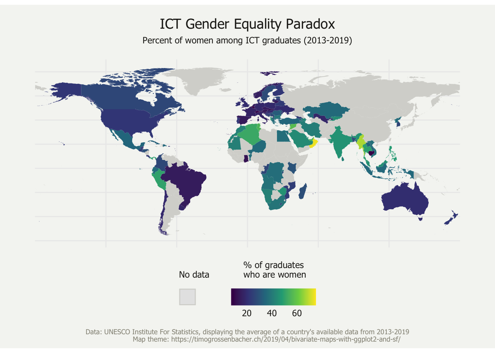
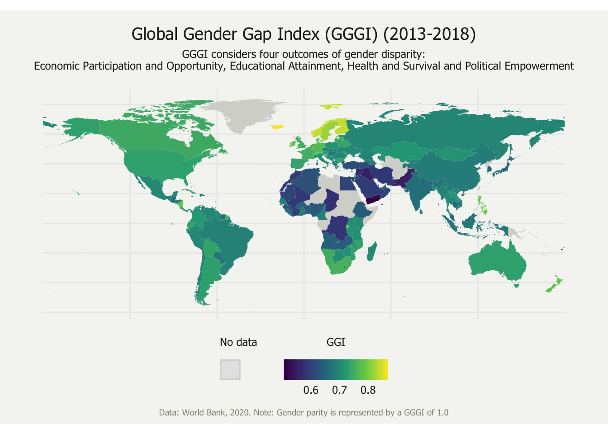

Chapter 2 Visualizing the ICT-GEP
Before diving into the data, these maps offer a visual explanation of the ICT-GEP when using the analysis method from the UNESCO think piece.
2.1 Percent of women among ICT Graduates worldwide

Note the visual reversal of colors when comparing the ICT map to the GGGI map. This is exactly the idea behind the ICT-GEP: the higher the gender equality, the lower the percentage of women among ICT graduates.
2.2 Global Gender Gap Index worldwide
